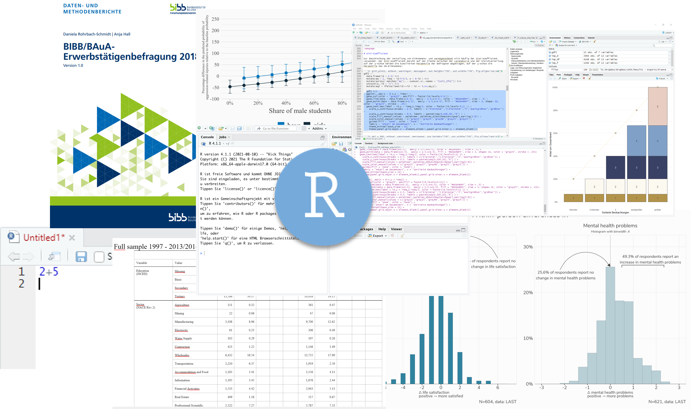

R am BIBB
Willkommen
Eine Einführung in R für Mitarbeitende am BIBB.
Dies das Begleitskript für die R-Kurse am BIBB.
Melden Sie sich gerne bei Fragen oder Wünschen unter andreas.filser[at]uol.de
Kursinformationen
Montags und Dienstags
17.04 - 18.04. und 24.04. - 25.04.2023
8:30 – 15:30 Uhr
Webex